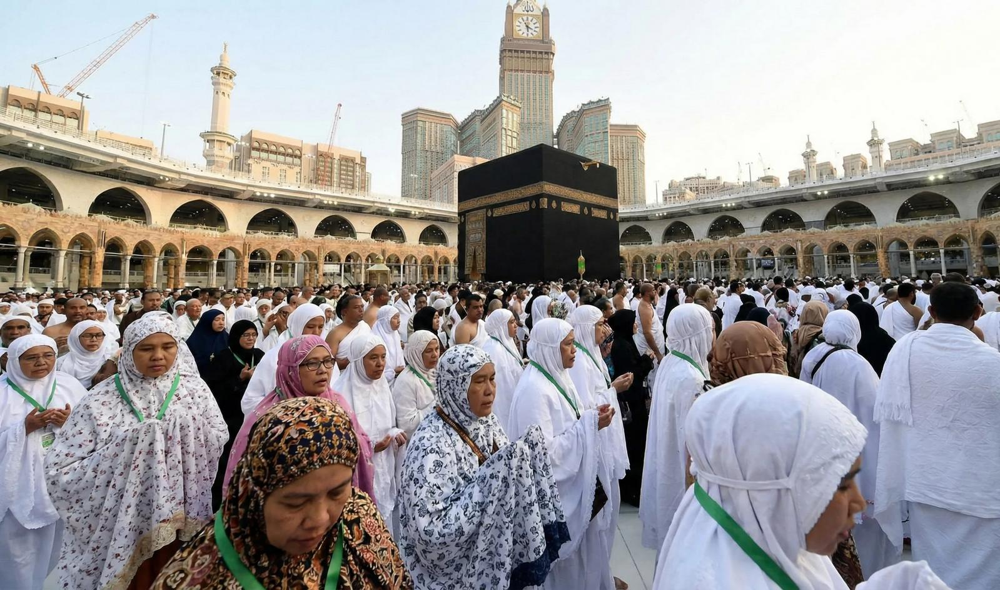

Umrah · Women Travellers
Umrah for Women Travelling Alone — 2026 Rules & Practical Guide

For decades, a woman planning Umrah had to plan around one condition first: a mahram — a male guardian — had to travel with her before a visa would be issued. That condition no longer exists. Since October 2022, Saudi Arabia has allowed women to perform Umrah without a mahram, and women now travel alone or in women-only groups in large numbers. This guide sets out the 2026 rules exactly as they stand, the two visa routes, the honest note about scholarly difference, and the practical steps and safety habits that make a solo journey smooth.
The 2022 change — the rule today: In October 2022, the Minister of Hajj and Umrah, Tawfiq Al-Rabiah, announced that women may perform Hajj or Umrah without a male guardian (reported by Arab News, 11 October 2022). The Ministry of Hajj and Umrah's own FAQ answers the question directly: asked whether a woman can perform Umrah without a mahram, it replies, "Yes, it is allowed." The rule applies to adult women of all ages. One limit stands: women under 18 travel with a parent or guardian.
Two visa routes:
- Tourist eVisa: If your nationality is eligible — for example the UK, US or EU countries — the Saudi tourist eVisa allows Umrah, and the application asks no mahram details at all. It is also multiple-entry, which suits sisters who hope to return.
- Umrah visa through an operator: Pilgrims from countries such as Pakistan, India and Bangladesh use the traditional Umrah visa, arranged through a licensed operator or the Nusuk platform. One honest caution: some operators still impose their own conditions on women travelling alone, even though the Saudi rule does not — so confirm with your operator before you book. Our Umrah Visa Fees 2026 guide breaks down the costs, and pilgrims travelling from Pakistan should read Umrah from Pakistan for the operator route step by step.
The practical guide — step by step:
- Passport: Your passport must be valid for 6+ months from travel. Check the date before anything else is booked.
- Visa: Take one of the two routes above. The Umrah visa fee is SAR 300 plus insurance; our Umrah Visa Fees 2026 guide sets out what the total usually comes to.
- Book through Nusuk: Book your hotel and transport through Nusuk where your visa route requires it, and keep every booking saved offline on your phone.
- Permits in the Nusuk app: Book your Umrah permit in the Nusuk app before you travel, and in Madinah book your Rawdah permit — women have their own visiting times and entrance, as our Rawdah Permit guide explains.
- Vaccinations: Requirements change — check the current vaccination rules on Nusuk before you travel and carry the certificates with your documents.
- Pack with the journey in mind: Our Umrah Packing List covers documents, medicines and the small things solo travellers rely on most, and first-time pilgrims should work through Umrah for First-Timers before departure.
Ihram clothing for women: A woman enters ihram in her ordinary modest dress — there is no special two-garment ihram for women as there is for men. A clean abaya and hijab in any colour is her ihram; what she avoids while in ihram is a sewn face veil (niqab) and gloves, following the Prophet's ﷺ instruction for women in ihram (Sahih al-Bukhari 1838). Our Ihram Rules guide covers what to wear and what to avoid in full.
Safety tips for travelling alone:
- Stay near the Haram: Choose a hotel a short, well-lit walk from Masjid al-Haram in Makkah and from the Prophet's Mosque in Madinah — the single biggest practical safety decision you will make.
- Travel in women-only company where you can: Join a women-only group or sisters from your hotel for ziyarat trips and the journey between the two cities; the women's sections of both mosques are busy and supervised at all hours.
- Keep documents and phone ready: Carry copies of your passport, visa and permits, keep your phone charged with a power bank in your handbag, and save your hotel's address card.
- Share your live location with family at home, send them your itinerary before you fly, and check in each day — small habits that let everyone relax.
Quick questions:
- Can a woman perform Umrah without a mahram in 2026? Yes. Saudi Arabia removed the mahram requirement in October 2022; the Ministry of Hajj and Umrah's FAQ confirms "Yes, it is allowed" for adult women of all ages. Girls under 18 travel with a parent or guardian.
- Which visa should a woman travelling alone apply for? Eligible nationalities (UK, US, EU and others) can use the tourist eVisa, which asks no mahram details. Other nationalities — Pakistan, India, Bangladesh and more — use the Umrah visa through a licensed operator or Nusuk; confirm the operator's own conditions before booking.
- Does the Saudi rule settle the religious question? No — it is a travel rule. Scholars differ (Shafi'i and Maliki allow travel in safe, trustworthy company; Hanafi requires a mahram), so consult a trusted scholar about your own situation.
Sources: Ministry of Hajj and Umrah — official FAQ · Arab News, 11 October 2022 · Nusuk — Official Site ↗ · Sahih al-Bukhari 1838 — Sunnah.com ↗